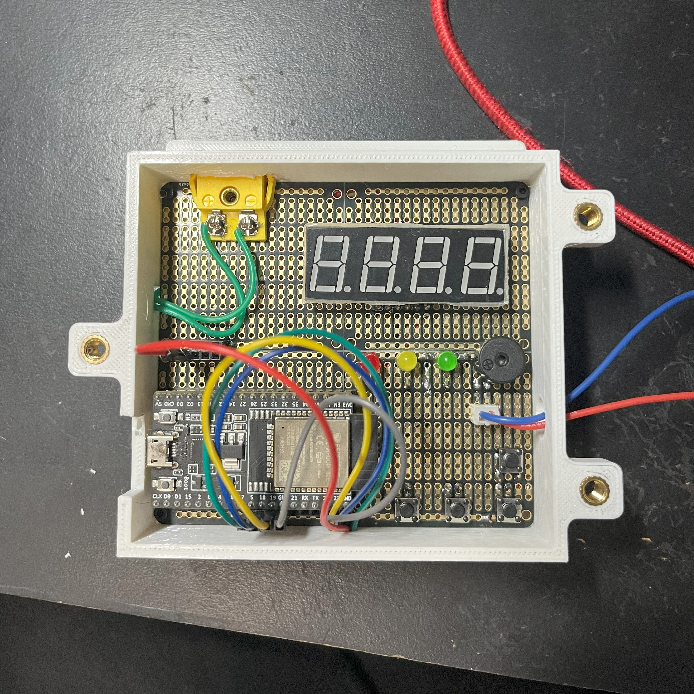
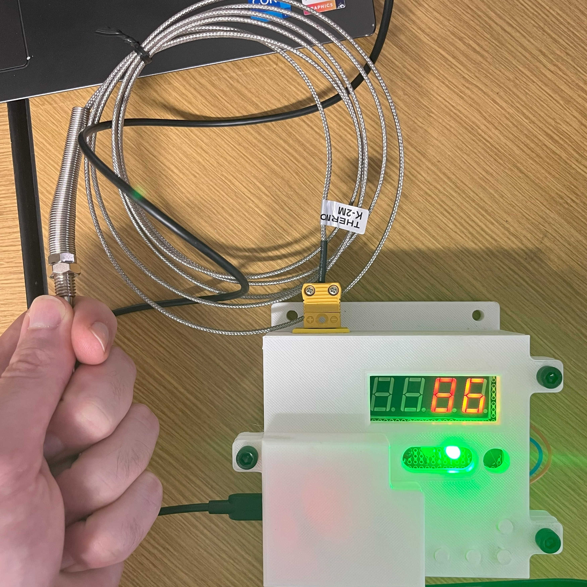
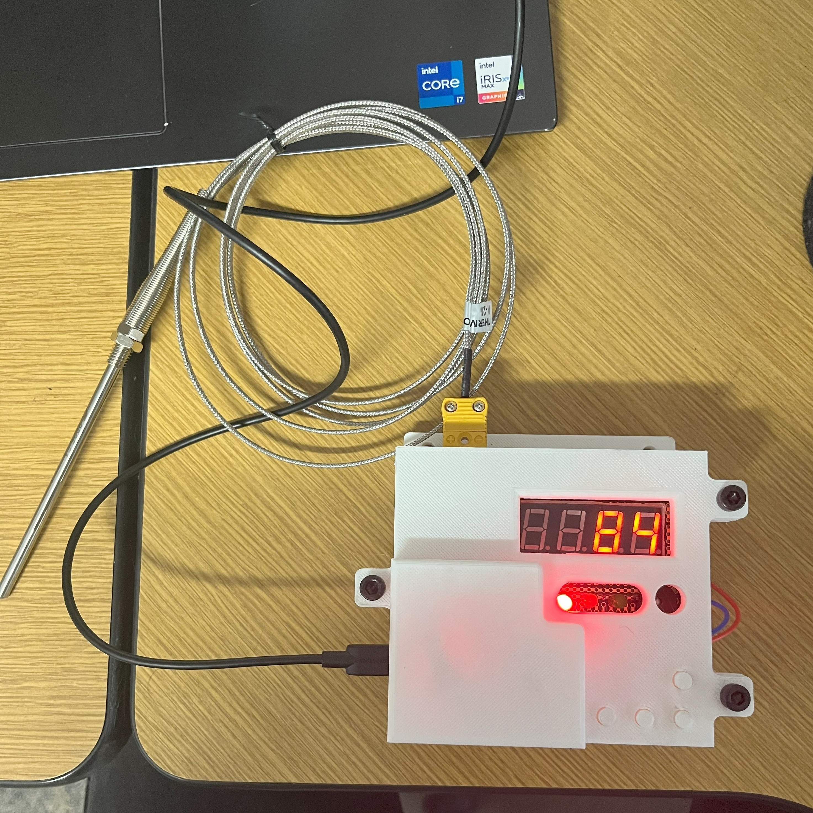
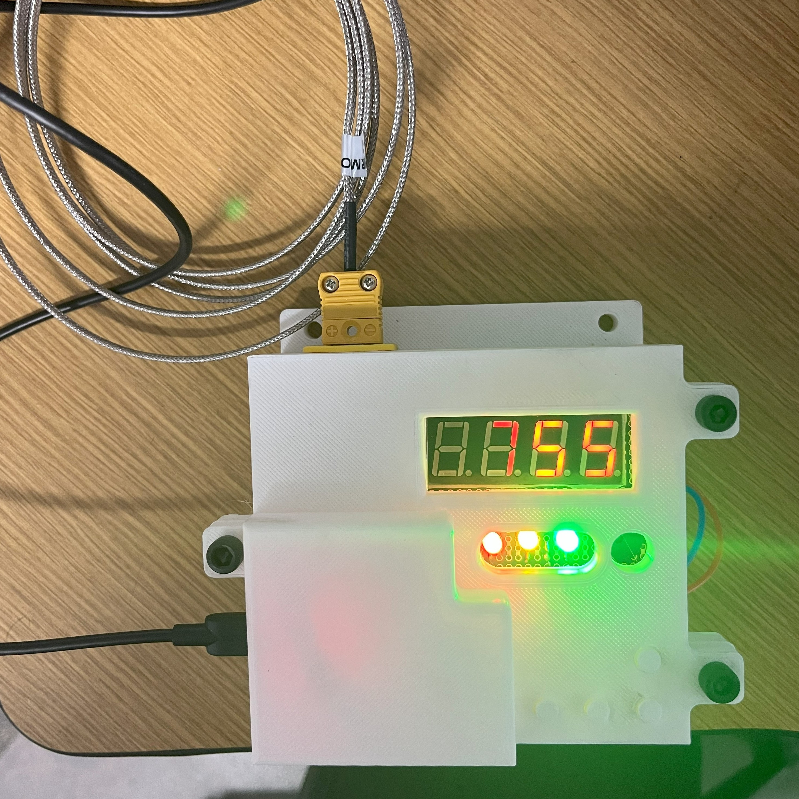

Beyond the electronics in my other projects, there are a couple that are more in the electrical and computer engineering realm.
A maintenance team member at Imagine keeps bees and makes honey. One step in this process uses a boiler to render honeycomb into honey. He asked me to build a thermometer that will notify him when the temperature gets too low so more wood can be added to the boiler. I developed a system on a breadboard then converted it to a protoboard and put it into an enclosure. Due to the temperature the boiler stack can reach, the system is built around an arbitrary Type-K thermocouple. The thermocouple signal is converted to SPI then processed by an ESP32. There is a 4-part, 7-segment LED display, 3 different color LEDs, and a buzzer. The buzzer also has a connector to branch off to an external relay (I chose to add this in case a buzzer isn't loud enough).




As part of my application to Rho Beta Epsilon, I programmed a simple wave generator using ESP32 timers. A potentiometer controls the frequency and a button switches between waveforms. The system works by manipulating an internal timer and outputting a counter value through a DAC pin.